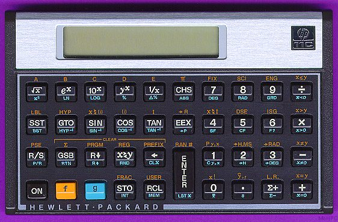

Prefix, Infix and Postfix
One of the odd things about Scheme compared with the C-style languages is it's use of prefix notation for operators. In prefix notation you put the operator first followed by the things it acts on and enclose the whole lot in brackets. So for example if you want to write 3+4, in Scheme you say:
(+ 3 4)
In normal math when you write 3x4+2, you have to know some rules about multiplication and addition. First you multiply 3 by 4, then add 2. So you evaluate multiplication operators before addition operators. Multiplication has a higher precedence than addition.
The advantage of the prefix notation is that no operator precedence is required; the bracketing shows what the operator acts on. So in Scheme if you want 3x4+2, you say
(+ (* 3 4) 2)
And if you want 3x(4+2), you write:
(* 3 (+ 4 2))
So in Scheme you don't need operator precedence, but you do need lots of brackets.
The reason Scheme makes this choice is it simplifies the job of the language interpreter. It doesn't have to understand operator precedence, only how brackets work. I think though it goes a bit further than just saving the interpreter writer a bit of work though. One of Schemes key features is a common notation for both data and program representation, which means a program can be represented as data and data can be interpreted as a program. That's quite a powerful feature, and I think the simple syntax of Scheme is part of what makes it possible.
Postfix notation

There is another possible way of writing operators, with the postfix, or "reverse Polish" notation. In postfix notation, the operator comes after it's operands. It has the advantage that you don't need operator precedence and you don't need brackets either.
Some computer languages, such as the printer language PostScript and the general purpose language Forth use postfix notation. But the most common use of postfix is probably in old style Hewlett-Packard calculators. I remember one of the old timers at my first job talking longingly about these machines, and the efficiency of postfix.
In postfix if you want to write 3+4, you write
3 4 +
And if you want 3x4+2 you write
3 4 * 2 +
Infix notation
Infix notation is the normal style of writing maths. It requires brackets and operator precedence, and so is the most complex of the three forms. It does however have the massive advantage of familiarity, and is probably the most human readable of the three forms.
One unusual feature of the infix notation used in the C-style languages is the operator precedence of the bitwise operators & and | is incorrect. Dennis Ritchie explains the historical accident which led to the unusual operator precedence as follows:
Early C had no separate operators for & and && or | and ||. (Got that?) Instead it used the notion (inherited from B and BCPL) of "truth-value context": where a Boolean value was expected, after "if" and "while" and so forth, the & and | operators were interpreted as && and || are now; in ordinary expressions, the bitwise interpretations were used. It worked out pretty well, but was hard to explain. (There was the notion of "top-level operators" in a truth-value context.)
The precedence of & and | were as they are now.
Primarily at the urging of Alan Snyder, the && and || operators were added. This successfully separated the concepts of bitwise operations and short-circuit Boolean evaluation. However, I had cold feet about the precedence problems. For example, there were lots of programs with things like
if (a==b & c==d) ...
In retrospect it would have been better to go ahead and change the precedence of & to higher than ==, but it seemed safer just to split & and && without moving & past an existing operator. (After all, we had several hundred kilobytes of source code, and maybe 3 installations....)
Personally I find the precedence of the logical operators and (&&) and or (||) surprising as well. For example in the expression:
a && b == c && d
I would expect (a && b) == (c && d), but in fact what you get is a && (b==c) && d. I guess you learn fairly early on is to use brackets where there could be any ambiguity.